Админское обучение Shamrai
Подробный гид по админке: публикации, рассылки, заявки, результаты, статистика, CRM, чаты и настройки. Смотрите подписи на скриншотах и следуйте маршрутам в каждом блоке.
Быстрый маршрут
Безопасность: не вставляйте токены, webhook-секреты, платежные ключи, пароли и другие секреты в чат, документы или скриншоты.
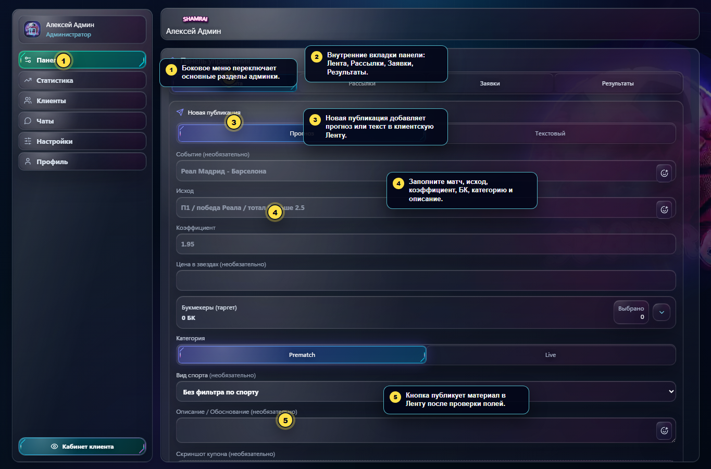
Публикация в Ленту
Путь: Панель -> Лента. Здесь создаётся открытый прогноз или текстовая публикация для клиентской Ленты.
- Откройте Панель и внутреннюю вкладку Лента.
- Для прогноза оставьте режим Прогноз.
- Заполните событие, исход и коэффициент.
- Выберите БК, категорию, спорт и описание.
- При необходимости приложите скрин купона.
- Нажмите Опубликовать прогноз в Ленту.
- Для текста переключитесь на Текстовый.
- Заполните заголовок, если он нужен.
- Введите текст публикации.
- При необходимости приложите изображение.
- Нажмите Опубликовать текст в Ленту.
Рассылка закрытого прогноза
Путь: Панель -> Рассылки -> Прогноз. Этот режим отправляет клиентам анонс, после которого они нажимают Взять или Не взять.
- Укажите коэффициент и, если нужно, верный коэффициент.
- Выберите БК: это основной фильтр аудитории.
- Добавьте короткое описание анонса.
- Нажмите Отправить анонс прогноза.
- Обработайте ответы клиентов во вкладке Заявки.
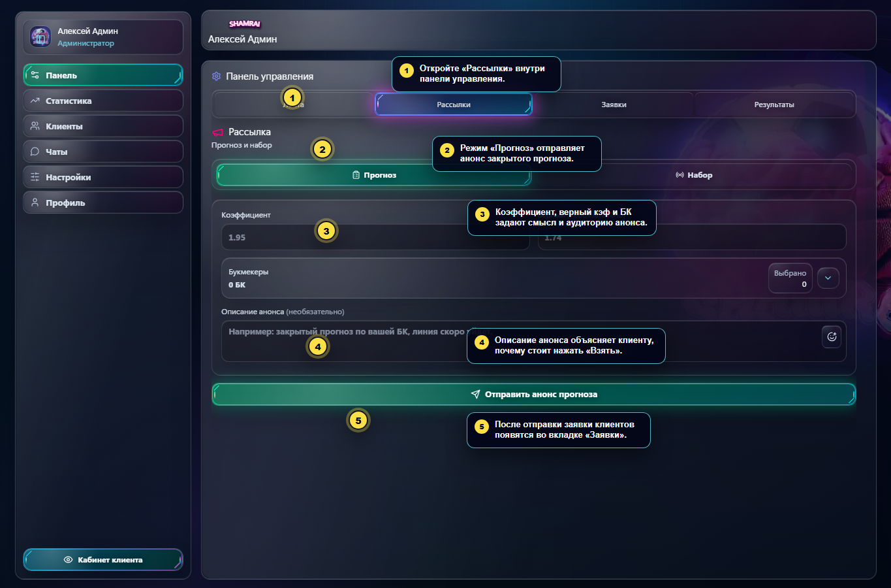
Рассылка набора
Путь: Панель -> Рассылки -> Набор. Набор используется для платной подборки или ручной продажи через диалог.
- Переключитесь на Набор.
- Проверьте счётчик получателей.
- Заполните название, матч, исход, спорт, коэффициент и стоимость.
- Выберите БК, приложите купон и описание.
- Нажмите Отправить набор.
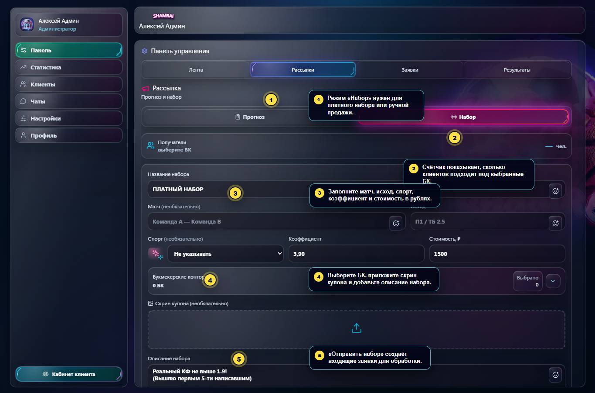
Очередь заявок
Путь: Панель -> Заявки. Здесь обрабатываются клиенты, которые заинтересовались прогнозом или набором.
- Ожидают - клиенты, которые нажали «Взять».
- Анонсировано - анонс отправлен, ответ ещё не получен.
- Отправлено - полная ставка уже ушла клиенту.
- Взяли вручную - менеджер закрыл заявку вручную.
- Раскройте группу матча или набора.
- Выберите клиента или нескольких клиентов.
- Нажмите Отправить или Полная ставка.
- Используйте Взял вручную, если выдача прошла вне автоматики.
- Используйте Остановить, если новые действия по матчу нужно прекратить.
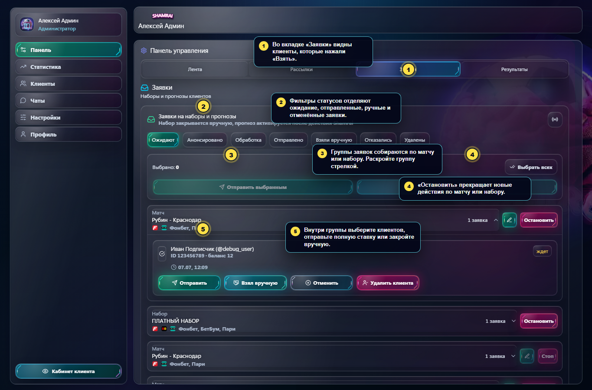
Результаты матчей
Путь: Панель -> Результаты. Раздел нужен, чтобы закрывать прогнозы и обновлять статистику.
- Найдите матч и проверьте исход, БК, тип выдачи и коэффициент.
- Если коэффициент просел, заполните Упал до, сохраните и отправьте уведомление.
- После матча нажмите Победа, Неудача или Возврат.
- Используйте Редактировать, если нужно поправить матч, БК или ссылки.
- Удаляйте прогноз только когда уверены, что он не должен попасть в расчёт.
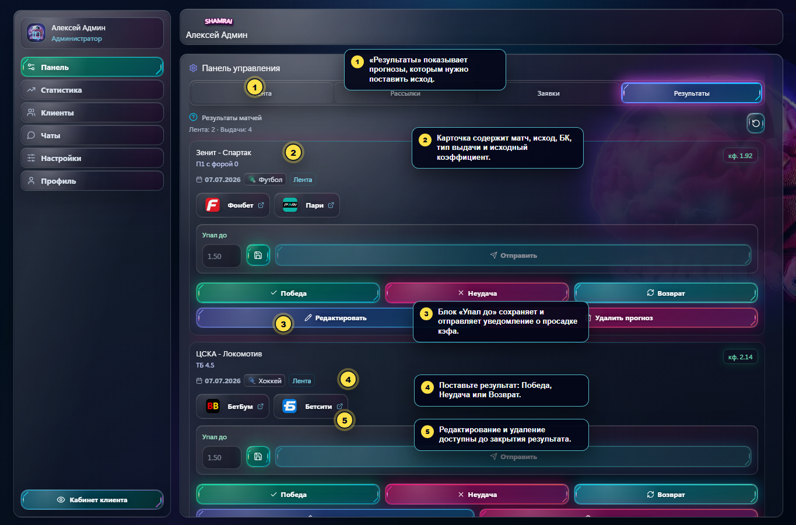
Статистика
Путь: Статистика. Здесь проверяются результаты по периодам, источникам, БК, спорту и клиентам.
- Выберите период: неделя, месяц, квартал или всё время.
- Переключите срез: обзор, лента, закрытые, наборы или клиенты.
- Проверьте прибыль, ROI, проход, средний КФ, объём и серию.
- Откройте детализацию по источникам, БК и видам спорта.
- Используйте экспорт для отчёта.
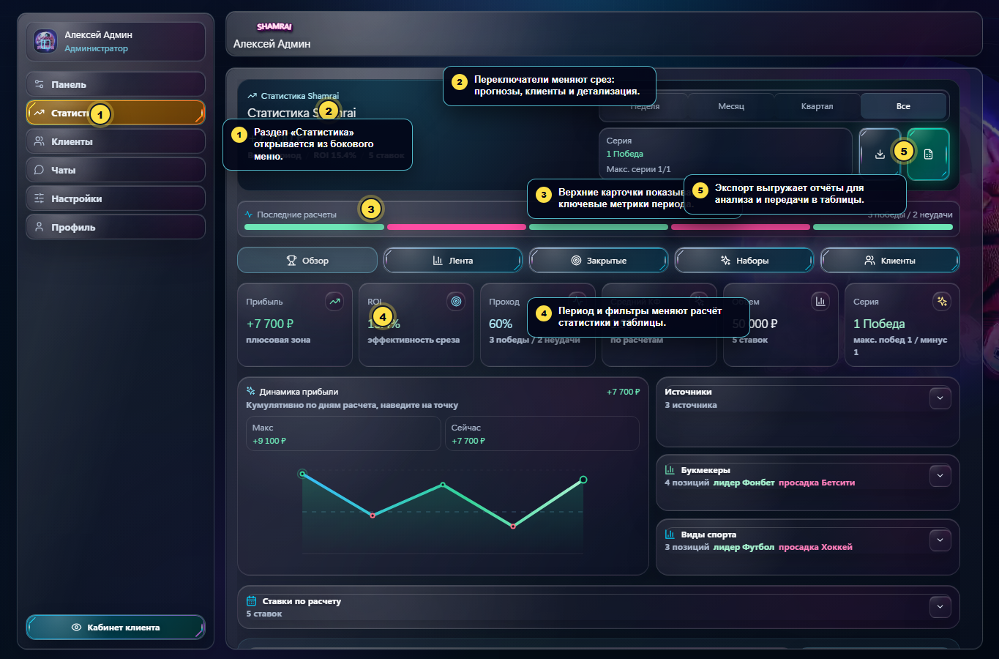
CRM клиентов
Путь: Клиенты. CRM помогает найти клиента, понять состояние и открыть карточку.
- Поиск работает по имени, username, ID, группе и метке.
- Фильтры помогают сузить список по активности, группе, метке и БК.
- Карточка строки показывает приоритет, каналы связи, баланс и последние результаты.
- Кнопка Открыть запускает редактирование клиента.
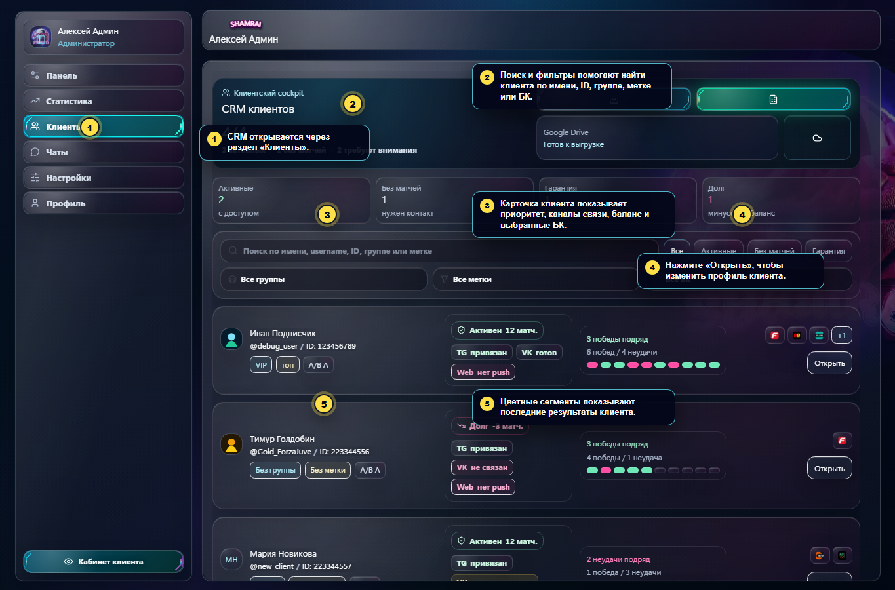
Карточка клиента
В карточке можно поменять группу, метку, баланс матчей, БК и гарантию. После любого изменения нажмите Сохранить изменения.
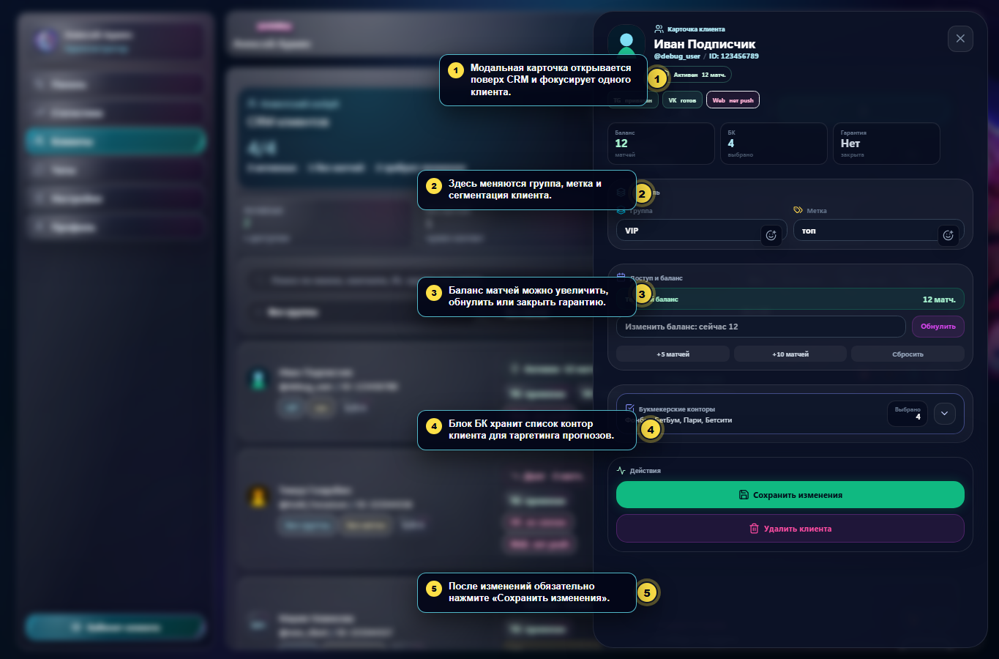
Чаты
Путь: Чаты. Раздел нужен для ответа клиентам от имени Shamrai.
- Выберите Открытые или Закрытые.
- Найдите диалог через список или поиск.
- Откройте клиента и прочитайте историю.
- Напишите ответ в нижнем поле.
- При необходимости приложите файл или изображение.
- Нажмите отправку. После решения вопроса можно закрыть диалог.
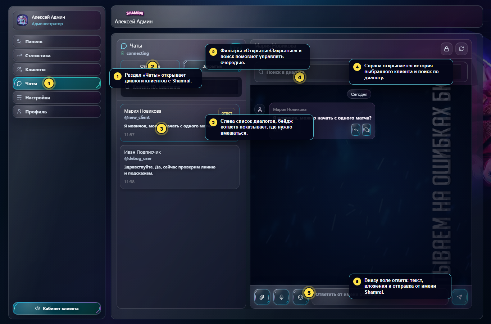
Тексты сообщений
Путь: Настройки -> Тексты сообщений. Выберите шаблон Telegram, VK или сайта, отредактируйте текст, проверьте переменные и сохраните.
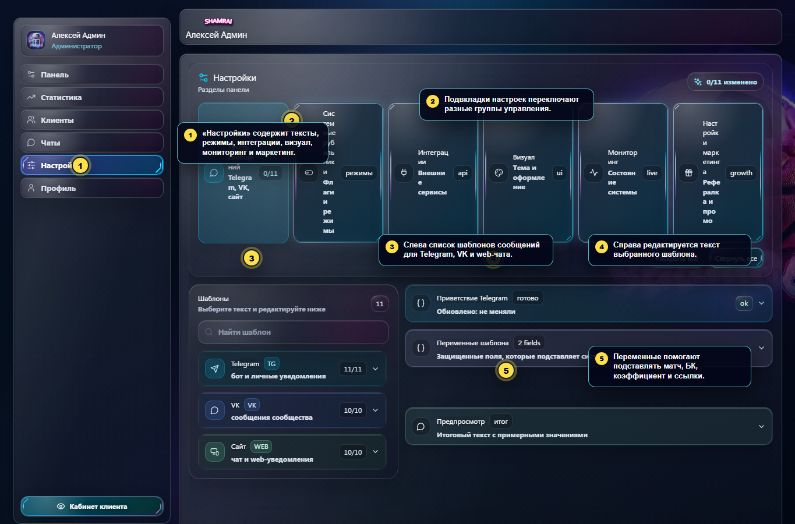
Системные рубильники
Путь: Настройки -> Системные рубильники. Здесь находятся maintenance, регистрации, опрос, покупки, пауза рассылок и сброс сессий.
Важно: после изменения глобальных флагов нажмите Сохранить изменения.
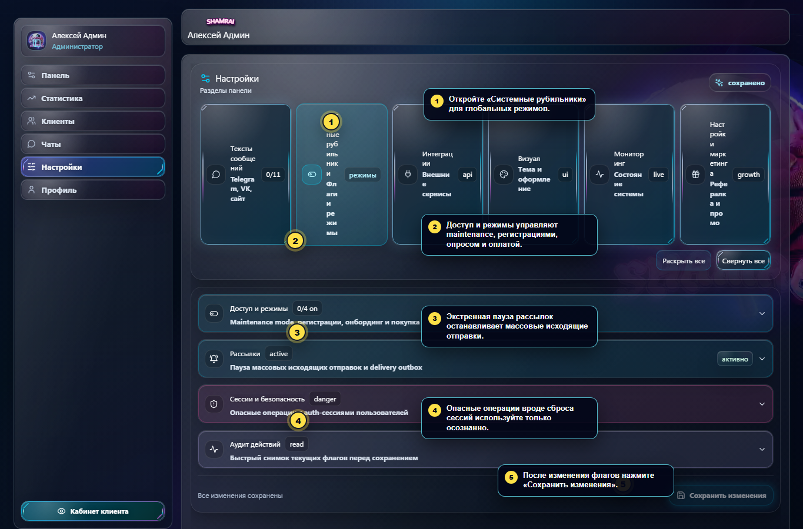
Интеграции
Путь: Настройки -> Интеграции. Вкладка закрыта паролем, потому что содержит настройки Telegram, VK, платежей, Web Push, Google Drive и публичных URL.
Правило: вводите пароль только в интерфейсе админки и не передавайте секреты в чат или документы.
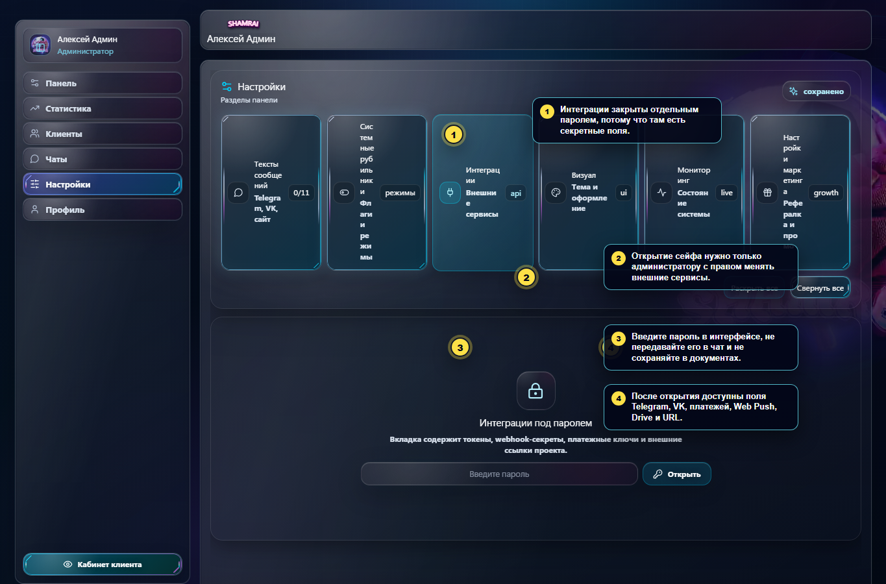
Короткий FAQ
Где создать прогноз в открытую Ленту?
Панель -> Лента -> Прогноз -> Опубликовать прогноз в Ленту.
Где отправить закрытый анонс?
Панель -> Рассылки -> Прогноз -> Отправить анонс прогноза.
Где клиенты, которые нажали «Взять»?
Панель -> Заявки, обычно фильтр Ожидают.
Где поставить результат матча?
Панель -> Результаты -> Победа, Неудача или Возврат.
Где изменить баланс клиенту?
Клиенты -> Открыть -> Доступ и баланс -> Сохранить изменения.
Где остановить массовые рассылки?
Настройки -> Системные рубильники -> Экстренная пауза рассылок -> Сохранить изменения.